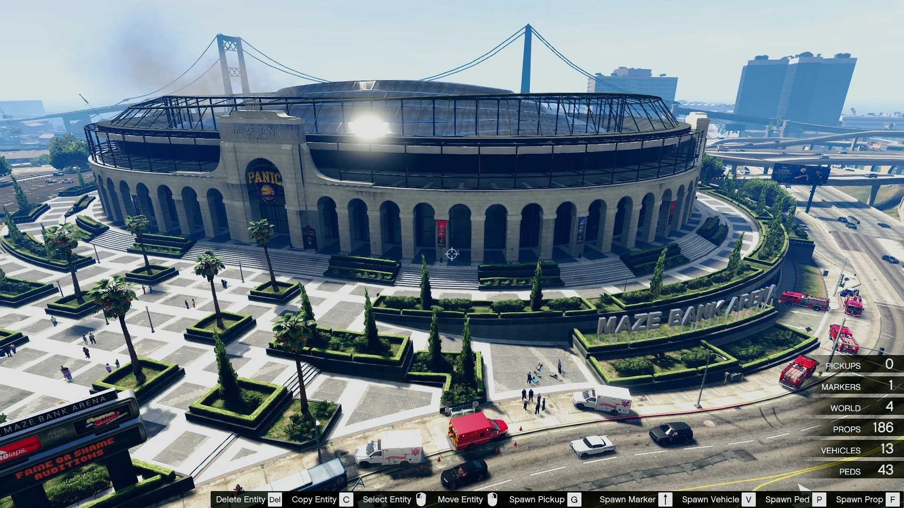

Arena
A Oficina da Arena de Guerra é uma propriedade especializada introduzida na atualização Arena War. Seu principal valor não está na geração de lucro passivo ou ativo consistente, mas sim no desbloqueio e modificação de veífculos especiais e na participação no modo de jogo competitivo de mesmo nome.
Metodo de Obter
E possivel comprar Oficinas da Arena de Guerra no Maze Bank Foreclosures, que você pode acessar pelo navegador da Internet no seu smartphone. O site pode ser encontrado na aba Dinheiro e Serviços ou inserindo o seguinte URL no seu navegador: www.maze-bankforeclosures.com.
No total, existem 3 Oficinas da Arena de Guerra disponíveis para compra (localizadas em diferentes partes do complexo do Maze Bank Arena, cada uma oferecendo acesso e serviços idênticos).
- Seção A : $ 995.000
- Seção B : $ 1.050.000
- Seção C : $ 1.110.000
Melhorias e Personalizações
Gráficos
- Simples: Gratis
- Geometria 1: Camuflagem
Urbana: $ 120.000 - Geometria 2: Chevron: $ 150.000
- Distopia 1: Safári Tóxico: $ 185.000
- Distopia 2: Ídolos Caídos: $ 210.000
- Distopia 3: Marca
Desperdiçada: $ 245.000 - Utopia 1: Le Chien: $ 320.000
- Utopia 2: Sebastian Dix: $ 350.000
- Utopia 3: Médici: $395.000
Estilo do Escritório
- Negócios: Gratuito
- Moderno: $ 180.000
- Urbano: $ 265.000
Pisos De Garagem
- Garagem B1: $ 195.000
- Garagem B2: $ 265.000
Cor
- Padrão: Cinza/Preto/Amarelo: Grátis
- Outros esquemas de cores:
8 Opções: $ 265.000
Alojamentos Pessoais
- Quartos Pessoais: $ 220.000
Mecânico
Seu Arena Workshop vem com um técnico de personalização no local, capaz de realizar qualquer modificação legal da arena que você possa sonhar. Além disso, você pode contratar um mecânico convidado da Benny's Original Motorworks para atender a todas as suas necessidades de lowriding e um especialista em armas para atualizar suas armas e veículos armados.
- Mecânico Da Arena: Grátis
- OMW De Benny Mecânico: $ 247.500
- Especialista em armas: $ 727.500
Funcionamento e Lucro
O lucro da Arena de Guerra está diretamente ligado ao desempenho nos eventos competitivos e à customização de veículos.
▸ Lucro Principal: Eventos Competitivos
- Função: Participar de uma variedade de modos de jogo baseados em combate e destruição que ocorrem dentro da Arena.
- Rendimento Ativo: O pagamento é baseado na sua performance, no número de jogadores e no tempo gasto. Os ganhos são baixos em comparação com Golpes ou Contratos de Serviço (geralmente $ 5.000 a $ 15.000 por partida).
- Progressão: Ao subir de nível na Arena, você desbloqueia Preços de fabrica e Bônus de Nível (Wheel Spin) que podem ser muito lucrativos.
▸ Renda Passiva: O Cofre da Arena
- Rendimento: Gerado pela espectadoria do público nos eventos da Arena.
- Gestão: Para maximizar, você deve ter a Cabine de Espectador (upgrade caro) e o Troféu no escritório (ganho por vitórias).
- Lucro Máximo: Acumula $ 5.000 por dia no jogo (48 minutos reais), um dos cofres com menor rendimento do jogo.
▸ Customização Exclusiva
- Vantagem: A Oficina da Arena é o único lugar para transformar veículos padrão em veículos da Arena (Armageddon, Future Shock, Nightmare) com armas, armaduras e modificações de salto.
A Arena de Guerra é um investimento de conteúdo e nicho para jogadores focados em PvP (Player vs Player) veicular e customização. Não é recomendada como uma fonte principal de renda devido aos baixos pagamentos por evento e o cofre limitado, mas é obrigatória para quem deseja acessar veículos e upgrades exclusivos da Arena War.
Assista a este guia para saber mais sobre. Este vídeo explica como funciona o esquema e como gerenciar.
l